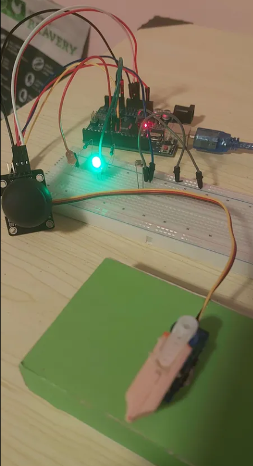
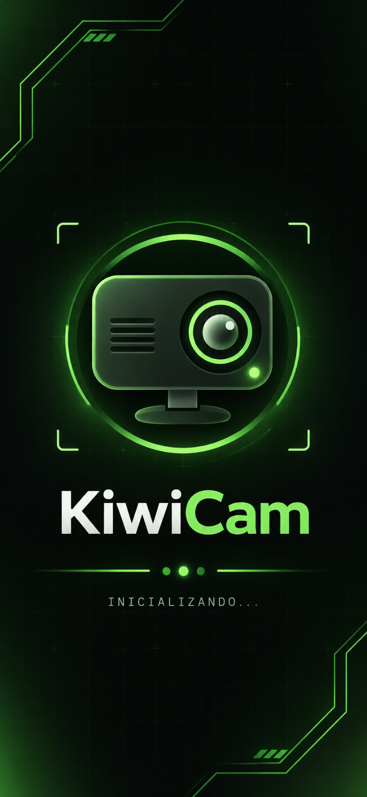
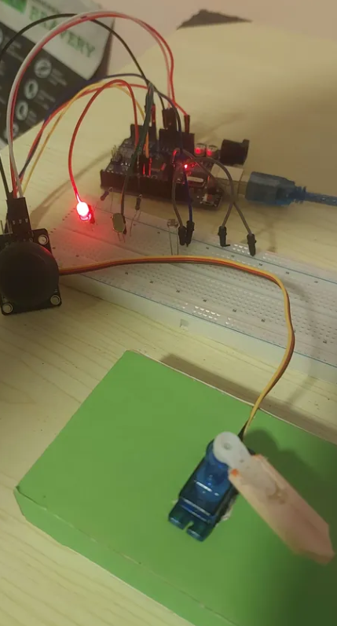
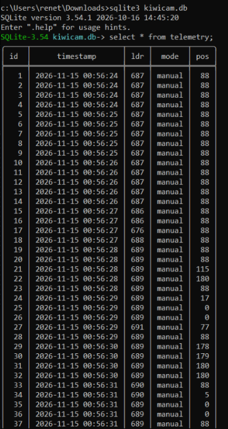
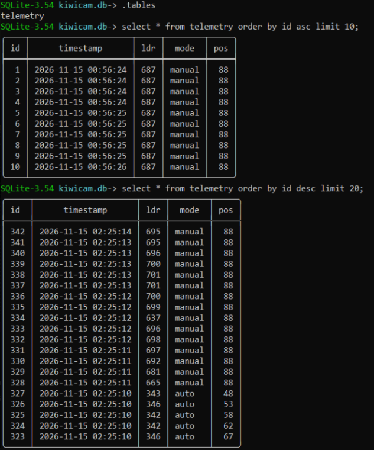
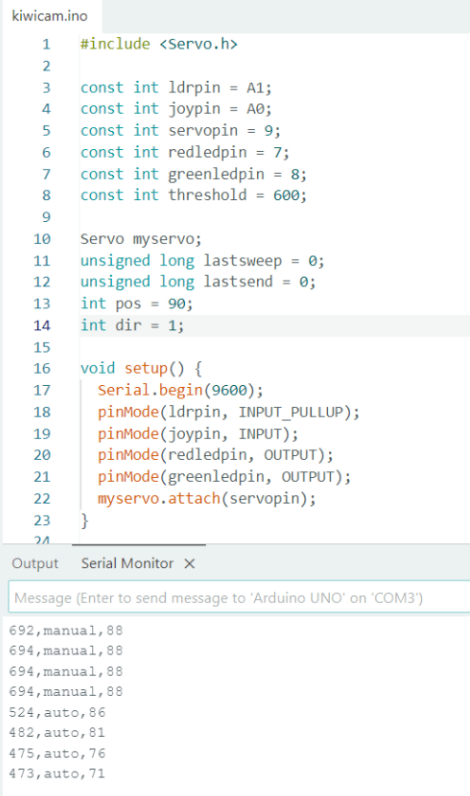

LED VERDE
PRUEBA · MANDO MANUAL
Modo día
El joystick controla el soporte orientable previsto para la cámara.

PROTOTIPO EXPERIMENTAL · KIWICAM
KiwiCam prueba el control orientable de una futura cámara de seguridad con Arduino, joystick y sensor de luz; sus datos de operación se registran en SQLite3.
En esta etapa no incluye un módulo de cámara ni graba video; esas funciones se plantean para el desarrollo final.
COMPORTAMIENTO DEL PROTOTIPO
El LDR conmuta el comportamiento y los LEDs señalan el estado; este montaje aún no genera imágenes.

PRUEBA · MANDO MANUAL
El joystick controla el soporte orientable previsto para la cámara.

PRUEBA · BARRIDO AUTOMÁTICO
Con poca luz, el servo recorre los extremos para evaluar el movimiento automático.
ALCANCE ACTUAL Y PROYECCIÓN
Esta fase valida la lectura de luz, el control del servo y el registro de telemetría. Para llegar a una cámara de seguridad funcional, una etapa posterior deberá incorporar un módulo de cámara y funciones de captura, aún no implementadas.
El umbral LDR configurado en el sketch es 800.
ELECTRÓNICA DEL PROTOTIPO
Cada componente permite probar una parte del control orientable previsto para la futura cámara.
Ejecuta las reglas de control y envía las lecturas al programa de registro.
Lee la luz ambiente y sirve de criterio para cambiar entre los modos de prueba.
Permite comprobar manualmente el ángulo del soporte mediante el servo.
Prueba el giro del soporte que podría sostener el módulo de cámara a futuro.
Identifican visualmente el estado del montaje durante cada prueba.
Protoboard donde se montan e interconectan todos los componentes del prototipo.
TELEMETRÍA DEL PROTOTIPO · SQLITE3
Python añade a kiwicam.db cada lectura enviada por Arduino.
La base SQLite3 guarda luz, modo y ángulo del servo; no almacena imágenes ni video.
timestampFecha y hora de lecturaldrValor de luz procesadomodemanual o autoposÁngulo actual del servoSe registra una muestra cada 200 ms para evaluar la respuesta de los componentes y revisar los cambios entre modos.
Revisa otras evidencias: los registros iniciales y recientes de SQLite3 muestran ambos modos; la segunda captura reúne el código y la salida del monitor serie.



FICHA DEL PROTOTIPO
Arduino controla el montaje y Python registra sus lecturas en SQLite3; esta versión no captura imágenes.
setup() inicia Serial a 9600 baudios, configura pines y conecta el servo al pin 9.
loop() invierte la lectura del LDR. Si queda bajo 800, activa auto y el LED rojo; si no, activa manual y el verde.
En automático, el servo barre entre 0° y 180°. En manual, el joystick define el ángulo. Cada 200 ms se transmite ldr,modo,pos.
sqlite3.connect() abre o crea kiwicam.db; se prepara la tabla telemetry y se abre el puerto COM3 a 9600.
El ciclo lee una línea, separa sus tres campos y convierte LDR y posición a enteros. Las líneas incompletas o valores inválidos se descartan.
Se agrega la fecha con una consulta parametrizada y se confirma con commit(). Al salir, el bloque finally cierra el serial y SQLite.
setup()loop()analogRead()1023 - valor.pinMode() / digitalWrite()map() / myservo.write()millis() / Serial.print()delay(15)sqlite3.connect() / cursor.execute()serial.Serial() / time.sleep()in_waiting / readline()decode() / strip() / split()len() / int()datetime.now() / strftime()conn.commit()except / finally#include <Servo.h>
const int ldrpin = A1;
const int joypin = A0;
const int servopin = 9;
const int redledpin = 7;
const int greenledpin = 8;
const int threshold = 800;
Servo myservo;
unsigned long lastsweep = 0;
unsigned long lastsend = 0;
int pos = 90;
int dir = 1;
void setup() {
Serial.begin(9600);
pinMode(ldrpin, INPUT_PULLUP);
pinMode(joypin, INPUT);
pinMode(redledpin, OUTPUT);
pinMode(greenledpin, OUTPUT);
myservo.attach(servopin);
}
void loop() {
int ldrval = 1023 - analogRead(ldrpin);
String mode = "";
if (ldrval < threshold) {
mode = "auto";
digitalWrite(redledpin, HIGH);
digitalWrite(greenledpin, LOW);
if (millis() - lastsweep > 30) {
pos += dir;
if (pos <= 0 || pos >= 180) {
dir = -dir;
}
myservo.write(pos);
lastsweep = millis();
}
} else {
mode = "manual";
digitalWrite(redledpin, LOW);
digitalWrite(greenledpin, HIGH);
int joyval = analogRead(joypin);
int servomanual = map(joyval, 0, 1023, 0, 180);
myservo.write(servomanual);
pos = servomanual;
}
if (millis() - lastsend > 200) {
Serial.print(ldrval);
Serial.print(",");
Serial.print(mode);
Serial.print(",");
Serial.println(pos);
lastsend = millis();
}
delay(15);
}from datetime import datetime
import time
import serial
import sqlite3
port = 'COM3'
baud = 9600
dbfile = 'kiwicam.db'
conn = sqlite3.connect(dbfile)
cursor = conn.cursor()
cursor.execute('''
create table if not exists telemetry (
id integer primary key autoincrement,
timestamp text,
ldr integer,
mode text,
pos integer
)
''')
conn.commit()
ser = None
running = 1
try:
ser = serial.Serial(port, baud, timeout=1)
time.sleep(2)
while running:
if ser.in_waiting > 0:
line = ser.readline().decode('utf-8', errors='ignore').strip()
if not line:
continue
parts = line.split(',')
if len(parts) == 3:
try:
ldr = int(parts[0])
mode = parts[1].strip()
pos = int(parts[2])
timestamp = datetime.now().strftime('%Y-%m-%d %H:%M:%S')
cursor.execute(
'insert into telemetry (timestamp, ldr, mode, pos) values (?, ?, ?, ?)',
(timestamp, ldr, mode, pos)
)
conn.commit()
print(f'{timestamp} - ldr: {ldr}, mode: {mode}, pos: {pos}')
except ValueError:
continue
except serial.SerialException as e:
print(f'serial error: {e}')
except KeyboardInterrupt:
running = 0
print('exiting...')
finally:
if ser and ser.is_open:
ser.close()
if conn:
conn.close()
Nota: el sketch usa 1023 - analogRead(A1) y luego compara con 800.
La relación entre lectura y día/noche depende del LDR y de cómo esté conectado;
calibra el umbral en el montaje real.
EXPLICACIÓN DEL PROTOTIPO